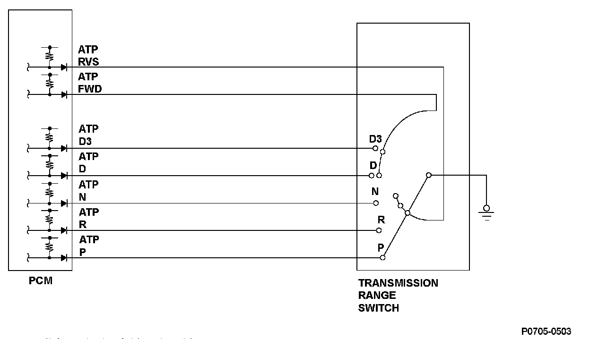
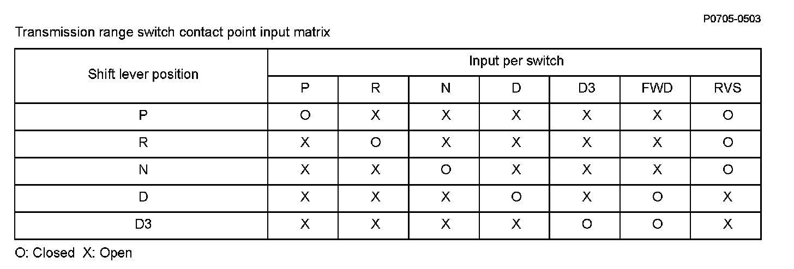
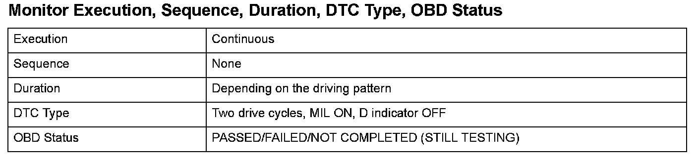
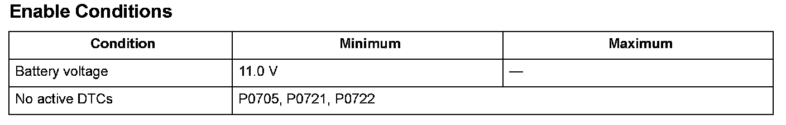

Advanced Diagnostics
DTC P0706: Open in Transmission Range Switch Circuit

General Description
The transmission range switch is attached to the control shaft. Operating the shift lever makes the control shaft rotate via the shift cable. The A/T gear position indicator indicates which position is selected according to the Low/High signal combinations which vary based on the control shaft rotational angle. The control shaft changes the position of the transmission range switch, activates the manual valve, and switches hydraulic pressure to shift the transmission through forward/neutral/reverse. The transmission range switch signal is used to determine the shift schedule. The voltage is 12 V (High) at the powertrain control module (PCM) input terminal when each transmission range switch position is open, and it is 0 V (Low) when each switch is closed. If the FWD switch stays open while the vehicle repeatedly accelerates to a specified vehicle speed and then stops despite being in the D position, the PCM detects a malfunction in the transmission range switch (open) and stores a DTC.

Monitor Execution, Sequence, Duration, DTC Type, OBD Status

Enable Conditions
Malfunction Threshold
No FWD position signal is detected when the vehicle speed changes from 6 mph (10 km/h) -> 25 mph (40 km/h) -> 6 mph (10 km/h) in the D or D3 position.
Driving Pattern
1. Start the engine, and accelerate to 25 mph (40 km/h) or more in the D position, then slow down to 6 mph (10 km/h).
2. Stop the vehicle, turn the ignition switch OFF, and repeat step 1.
- Drive the vehicle in this manner only if the traffic regulations and ambient conditions allow.
Diagnosis Details
Conditions for illuminating the MIL
When a malfunction is detected during the first drive cycle, a Temporary DTC is stored in the PCM memory. If the malfunction recurs during the next (second) drive cycle, the MIL comes on and the DTC and the freeze frame data are stored.
Conditions for clearing the MIL
The MIL will be cleared if the malfunction does not recur during three consecutive trips in which the diagnostic runs.
The MIL, the DTC, the Temporary DTC, and the freeze frame data can be cleared by using the scan tool Clear command or by disconnecting the battery.